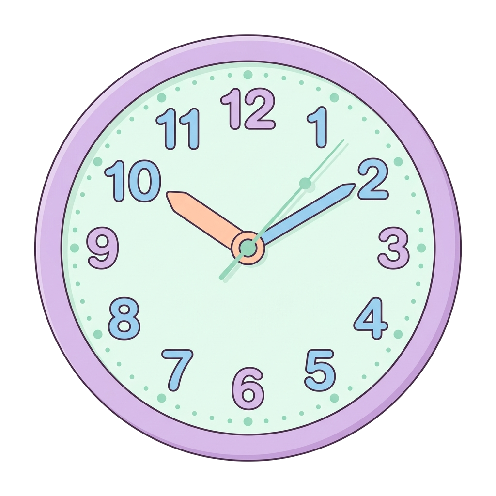
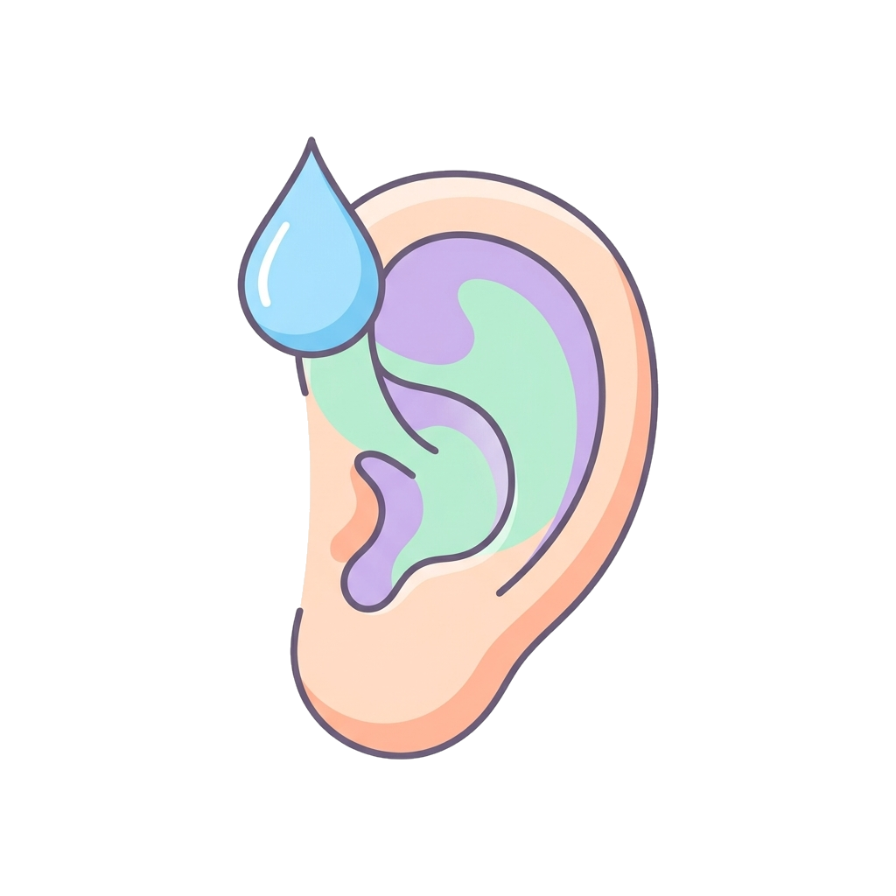

5 · Vie di somministrazione
Via oculare e otica
Via oculare (oftalmica) Collirio→
Collirio→ Sacco congiuntivale→
Sacco congiuntivale→

Contatto breveApplicazione al sacco congiuntivale.
- Cura: il preparato deve essere sterile, isotonico e con un pH adeguato, per non irritare la cornea.
- Il tempo di contatto è breve, per via dell'ammiccamento e delle lacrime.
Via oticaGocce→→ A temperatura
A temperatura

Condotto uditivoInstillazione nel condotto uditivo esterno.
- Funzione: trattamento locale dell'otite o rimozione del cerume.
- Il liquido non deve essere freddo, per evitare vertigini al paziente.
Attenzione
Colliri e gocce otiche non sono intercambiabili: un preparato per l'orecchio non è sterile come deve esserlo un collirio.
18